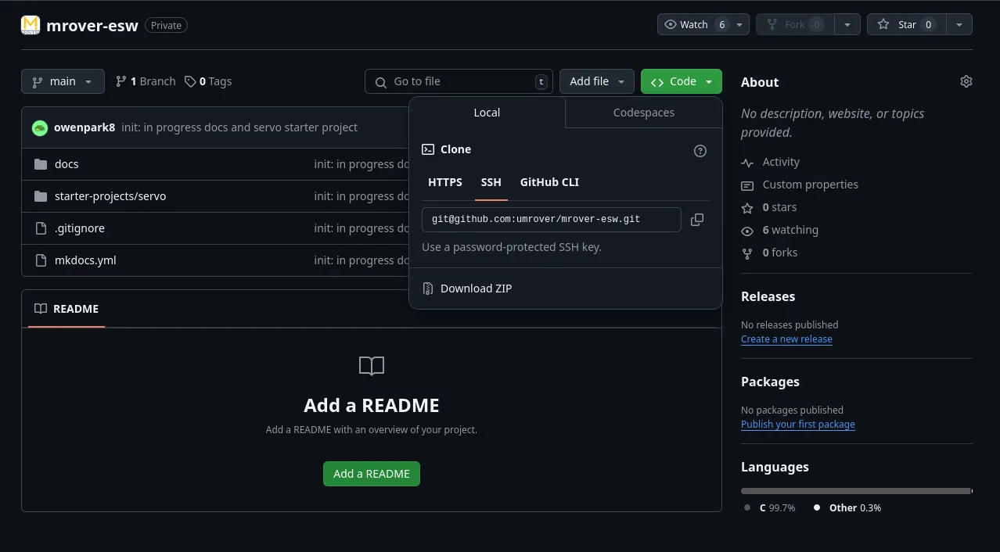

Servo Starter Project - Part 1 - PWM
This starter project is made up of two parts: PWM and CAN. This is Part 1 - PWM.
By the end of this part, you should have an understanding of timers and PWM (pulse width modulation) signals.
Just as a reminder, if you have any questions, feel free to reach out to any of the ESW leads or members. This project isn't meant to be high-stakes, so please reach out if you ever get stuck!
Prerequisites
- STM32Cube installed
- LED Project completed and shown to an ESW lead
- Git setup
- STM32G431RB Nucleo
- SG90 Servo
Intro
As mentioned earlier, by the end of the project you should be able to drive a servo. This project will also teach some coding practices used for STM32 code. Similar to our real code, this starter project will be in C++. While you are working through the project, keep the following in mind:
- How could you document your code so that others can easily read and understand it?
- How could you write your code so that it can easily be adjusted for different pins, different number of servos, etc.?
Guide
1. Setting up the project
Since you already have practice creating a project, you will only need to clone and open the premade STM32 project for this starter project.
Go to this repository, click the "Code" tab, and copy the SSH URL. 
You now have the URL you need to clone the project.
Clone the project onto your local computer by running the following command in your terminal:
git clone link-copied-in-above-stepEnter the directory:
cd mrover-eswThen, create a new branch for yourself
git switch -c starter/your-first-nameOpen STM32CubeMX and open the Servo Part 1 starter project (the directory named p1-pwm).
2. PWM timer configuration
Once the .ioc is open, configure the pins for PWM.
- Select the PC0 pin on the chip in the .ioc and change it to TIM1_CH1.
- On the left side of the .ioc file, under Timers, select TIM1 (shown below).
- Change Channel1 from "Disable" to "PWM Generation CH1" (shown below).

We will now have to configure two values—Prescaler and Counter Period—in order to correctly set up this PWM timer. These values are located in the "Parameter Settings" and must be calculated. Refer to the timer reference guide for information on calculating these values.
Read the datasheet for the servo and determine what PSC and ARR should be given that the clock frequency of the Nucleo is 72MHz.
Once you have determined and edited the timer config, save the file and generate code. Note: you can always come back to the .ioc to make changes.
3. Opening the header file
Having a servo object will make it easier to adjust the number servos or where the servos are in the future, so for good practice, we will create a Servo class and declare any member variables and member functions in a header file.
On the menu to the left, in Inc, open the header file named servo.hpp.
Here, we can see the interface for the Servo class that we will be implementing.
The Servo class has 2 member variables:
TIM_HandleTypeDef *timer: this tells the STM which timer is being used to generate the PWM signaluint32_t channel: this tells the STM which channel is being used for the PWM signal
It also has 3 member functions:
- A constructor that takes in the timer and channel for the PWM signal
- A function
start_servo()that starts the PWM generation - A function
set_servo_angle(int angle)that moves the servo to the specified angle
4. Implementing Servo functions
Now that we know the interface for the Servo class, it's time to implement the functions.
On the menu to the left, in Src, open the C++ source file named servo.cpp.
To start the servo, you must initialize the timer used to generate the PWM signal. To do this,
use HAL_TIM_PWM_Start(TIM_HandleTypeDef *htim, uint32_t Channel). Find more information about this
built-in HAL function here.
When implementing set_servo_angle, keep in mind what PWM signal corresponds to what angle.
Check back on the servo datasheet
to determine this. In order to set the CCR register to change the PWM signal, you can use
__HAL_TIM_SET_COMPARE(__HANDLE__, __CHANNEL__, __COMPARE__). Below is information on this function:
/**
* @brief Set the TIM Capture Compare Register value on runtime without calling another time ConfigChannel function.
* @param __HANDLE__ TIM handle.
* @param __CHANNEL__ TIM Channels to be configured.
* This parameter can be one of the following values:
* @arg TIM_CHANNEL_1: TIM Channel 1 selected
* @arg TIM_CHANNEL_2: TIM Channel 2 selected
* @arg TIM_CHANNEL_3: TIM Channel 3 selected
* @arg TIM_CHANNEL_4: TIM Channel 4 selected
* @arg TIM_CHANNEL_5: TIM Channel 5 selected
* @arg TIM_CHANNEL_6: TIM Channel 6 selected
* @param __COMPARE__ specifies the Capture Compare register new value.
* @retval None
*/
#define __HAL_TIM_SET_COMPARE(__HANDLE__, __CHANNEL__, __COMPARE__)5. Testing your servo functions
Now that we have implemented our Servo class, it's time to test it out.
Since this is a C++ project, we will not be using the main.c. Instead, navigate to Src
and open driver.cpp.
In the new_main() function, create a new Servo using the constructor. The timer parameter for
should be a TIM_HandleTypeDef*. The name for the Timer Handle that is being used is at the top of
driver.cpp. The channel parameter should correspond with which timer channel you are using
(remember we set our pin to TIM1_CH1).
Now, we can start the servo using the start_servo() function we created.
Then, in the for ( ;; ) loop, change the angle of the servo a few times to make sure your
set_servo_angle() function works and that the PSC and ARR you selected in the .ioc are correct.
Between each function call make sure to add a delay (Hint: there is a built in HAL function for delays).
When you are satisfied with your code, make sure it builds and then get a Nucleo, a logic analyzer, and some jumper cables to check your PWM signals. If you think the PWM signals are correct based on the datasheet, you can test your code on a servo. If you are unsure, just ask for help!
Logic Analyzer
The simplest method for debugging a digital signal is often to use a logic analyzer. Please install Logic on your laptop.
To use Logic, connect PC0 to one of the pins of the logic analyzer and make sure the logic analyzer is grounded to the Nucleo. Then, flash the code and press the play button. If you wrote code in the main while loop to change the servo angle a few times (which you should), you'll notice the signal in Logic changing. Play around with Logic:
- Zoom in and out
- Pause the display
- Mouse over the different parts of the signal
- Try to understand what all the different numbers mean
Wiring the Servo
In order to properly wire the servo, first consult the datasheet.
- How much voltage does the servo need?
- Which wires are signal, power, and ground?
Using a Breadboard
A breadboard is broken into two sets of long rails on the outside edges of the board and multiple shorter rails on the inner part of the board. These rails allow for easy connections between wires on the same rail. Below is a picture depicting these rails.
In order for the signal to work, the servo and the Nucleo must have a common ground. Connect the servo's ground wire to one of the ground pins on the Nucleo, the power to the appropriate power pin on the Nucleo, and the signal wire to PC0.
If you have any questions, don't be afraid to reach out to an ESW lead or SAM(s).